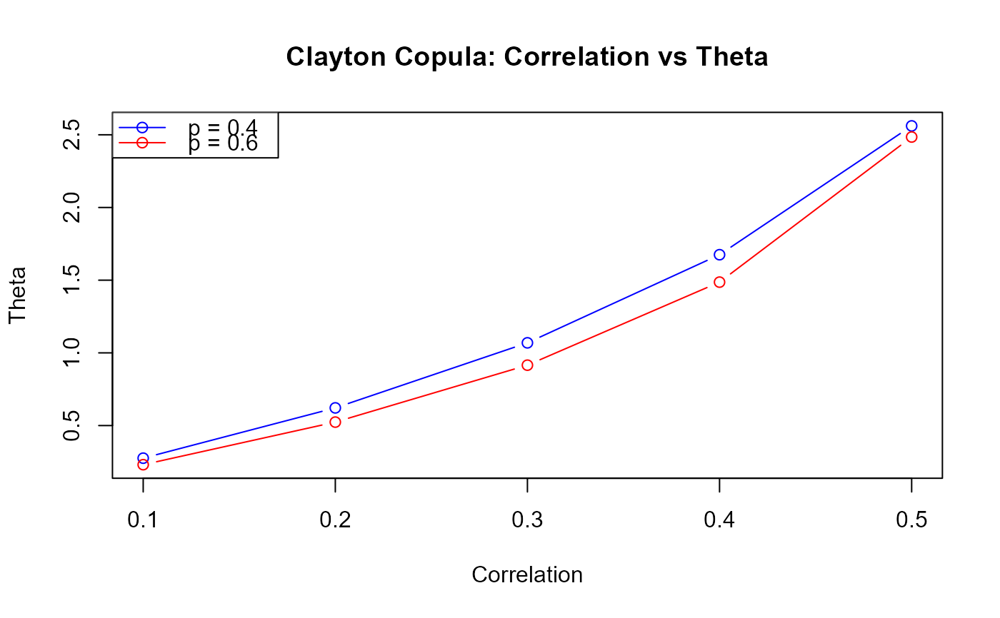

Compute Association Parameter for Copulas Between Response and Time-to-Event Endpoints
Source:R/CopulaParamResponseTTE.R
CopulaParamResponseTTE.RdComputes the copula association parameter (theta) that corresponds to a specified correlation coefficient between a binary response endpoint and a time-to-event (TTE) endpoint. This function solves for theta using the relationship between the correlation coefficient and the copula function via numerical integration and the secant method.
Arguments
- p
Numeric. The true probability of the binary response endpoint. Must be between 0 and 1 (exclusive).
- rho
Numeric. The desired correlation coefficient between the response and TTE endpoints. Must be within the feasible range determined by Fréchet-Hoeffding bounds for the given p.
- copula
Character. The copula family to use. Options are "Clayton" or "Frank" (default is "Clayton").
Value
A numeric value representing the association parameter theta that achieves the specified correlation rho.
Details
This function calculates the copula association parameter theta by solving the equation that relates the correlation coefficient to the copula function: $$\rho = \sqrt{\frac{1-p}{p}} \left[1 + \frac{1}{1-p} \int_0^1 \log(1-u) \cdot c_y(u, 1-p; \theta) \, du\right]$$
where \(c_y(u, v; \theta) = \frac{\partial C(u, v; \theta)}{\partial u}\) is the first partial derivative of the copula function C with respect to its first argument.
Clayton copula: $$C(u_1, u_2; \theta) = (u_1^{-\theta} + u_2^{-\theta} - 1)^{-1/\theta}$$
Parameter range: θ ∈ (0, ∞)
Cannot model negative dependence
Exhibits strong lower tail dependence
As θ → 0: independence; as θ → ∞: Fréchet upper bound
Frank copula: $$C(u_1, u_2; \theta) = -\frac{1}{\theta} \log\left[1 + \frac{(e^{-\theta u_1} - 1)(e^{-\theta u_2} - 1)}{e^{-\theta} - 1}\right]$$
Parameter range: θ ∈ (-∞, ∞)
Can model both positive and negative dependence
Exhibits symmetric tail dependence
As θ → -∞: Fréchet lower bound; θ = 0: independence; θ → ∞: Fréchet upper bound
The function first checks whether the specified rho is within the feasible
range using CorBoundResponseTTE. It then uses the secant
method to iteratively solve for theta. The secant method uses linear
interpolation between two points to find where the objective function
crosses zero.
Note
The correlation between a binary response endpoint and an exponentially distributed TTE endpoint depends only on the response probability p and the copula parameter theta, not on the hazard rate of the TTE endpoint. This is because the hazard rate only affects the scale of the TTE variable, while the correlation structure is determined by the copula and the response probability.
The secant method algorithm:
Start with two initial values theta_0 and theta_1 (adaptively chosen based on rho)
Evaluate the objective function at both points: f_0 = f(theta_0), f_1 = f(theta_1)
Find the next approximation using linear interpolation: theta_new = theta_1 - f_1 * (theta_1 - theta_0) / (f_1 - f_0)
Check for convergence (either |f_new| or |theta_new - theta_1| is small)
If not converged, update: theta_0 <- theta_1, theta_1 <- theta_new, and repeat
References
Trivedi, P. K., & Zimmer, D. M. (2005). Copula modeling: an introduction for practitioners. Foundations and Trends in Econometrics, 1(1), 1-111.
Hofert, M., Kojadinovic, I., Maechler, M., & Yan, J. (2018). Elements of copula modeling with R. Springer.
Burden, R. L., & Faires, J. D. (2010). Numerical Analysis (9th ed.). Brooks/Cole.
Examples
# Clayton copula with positive correlation
CopulaParamResponseTTE(p = 0.4, rho = 0.3, copula = "Clayton")
#> [1] 1.069004
# Frank copula with positive correlation
CopulaParamResponseTTE(p = 0.4, rho = 0.3, copula = "Frank")
#> [1] 2.598995
# Frank copula with negative correlation
CopulaParamResponseTTE(p = 0.4, rho = -0.2, copula = "Frank")
#> [1] -1.732853
# Compare theta values across different copulas for the same correlation
rho_target <- 0.3
theta_clayton <- CopulaParamResponseTTE(p = 0.4, rho = rho_target,
copula = "Clayton")
theta_frank <- CopulaParamResponseTTE(p = 0.4, rho = rho_target,
copula = "Frank")
cat("Clayton theta:", theta_clayton, "\nFrank theta:", theta_frank, "\n")
#> Clayton theta: 1.069004
#> Frank theta: 2.598995
# Explore relationship between correlation and theta for different p values
rho_seq <- seq(0.1, 0.5, by = 0.1)
theta_p40 <- sapply(rho_seq, function(r) {
CopulaParamResponseTTE(p = 0.4, rho = r, copula = "Clayton")
})
theta_p60 <- sapply(rho_seq, function(r) {
CopulaParamResponseTTE(p = 0.6, rho = r, copula = "Clayton")
})
plot(rho_seq, theta_p40, type = "b", col = "blue",
xlab = "Correlation", ylab = "Theta",
main = "Clayton Copula: Correlation vs Theta",
ylim = range(c(theta_p40, theta_p60)))
lines(rho_seq, theta_p60, type = "b", col = "red")
legend("topleft", legend = c("p = 0.4", "p = 0.6"),
col = c("blue", "red"), lty = 1, pch = 1)
